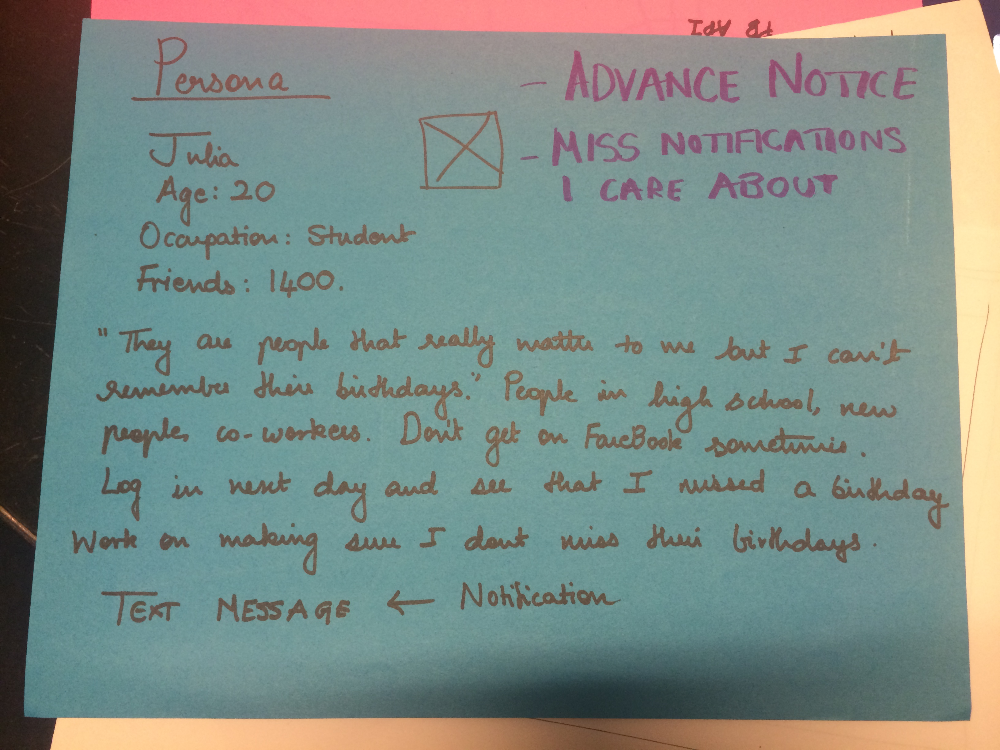
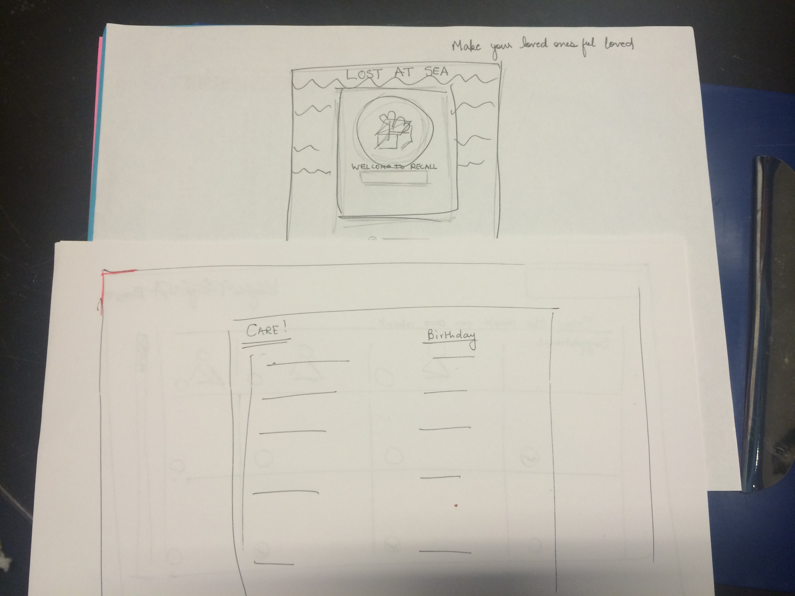
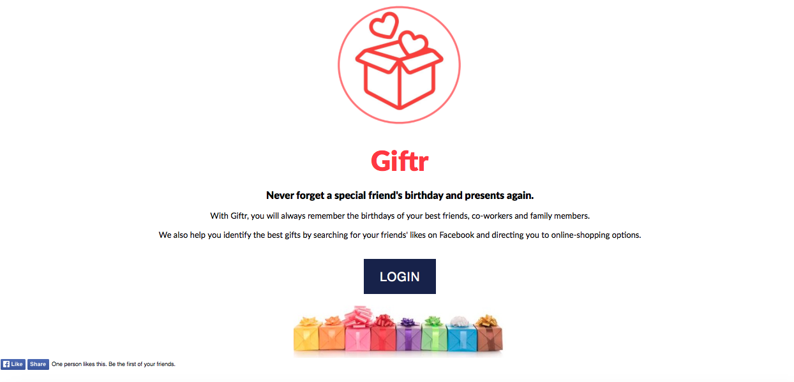
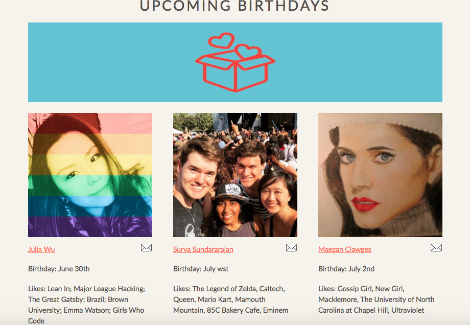
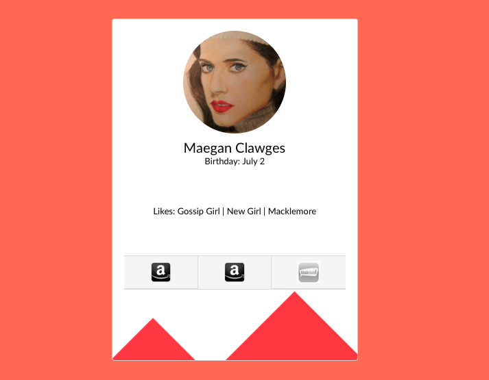
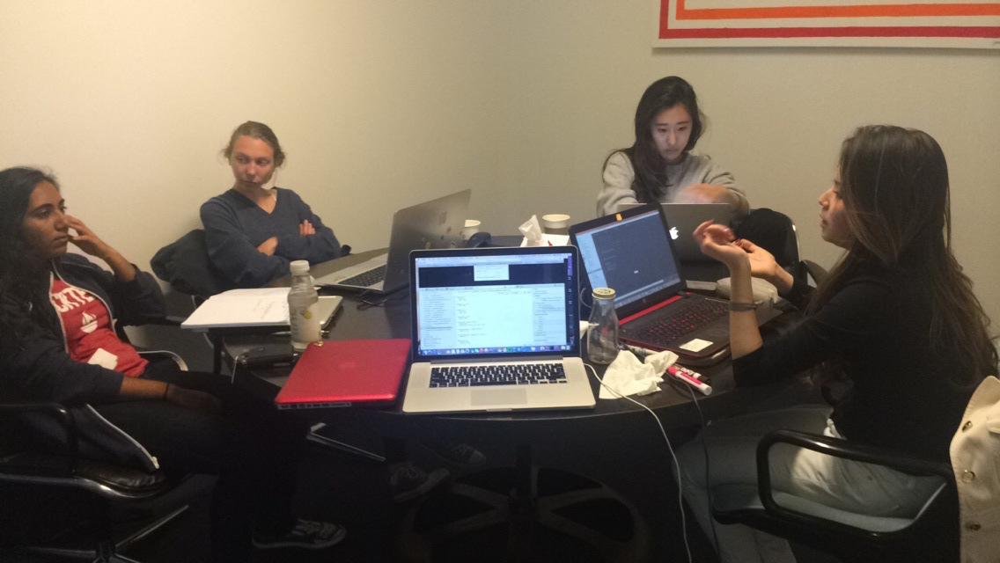

Giftr is a prototype of a web application that helps you remember the birthdays of your best friends, co-workers and family members. It also identifies the best gifts by searching for your friends'​ likes on Facebook and directing you to online-shopping options. This prototype was created during a hackathon in the span of 12 hours.
The first step was creating a persona to understand the target user and begin thinking about the various features that the application would need to have in order to be useful to a wide range of audiences. My team and I created a short persona.

We then began thinking of the main features that should be incorporated into the homepage and sketched out a few ideas of the first screen.

The first step is logging into the application with your Facebook account. The first time you use the application you would select your top ten friends/co-workers/family members. It then shows you upcoming birthdays and gift recommendations based on that person's most recent Facebook likes.
The features we would like to add to the application in the future are selecting shipping dates and options in advance and allowing the person you are sending the gift to to select the gift they would like from a list of options.
This is the homepage of the final prototype.

After logging in with your facebook profile, the application will display the next three friends that have upcoming birthdays and also list their most recent likes on facebook.

After clicking on the person that we would like to view in more detail or pick a gift for, the next screen will display that specific persons recent likes. In this case, we assume that the user picked Maegan.
This screen gives you the option of picking a gift depending on the likes. For example, if the most recent like is an artist or person, the suggestion will be tickets for a concert etc. If it it an object it will display results from retail websites.

Here are some pictures of my team and I working!
